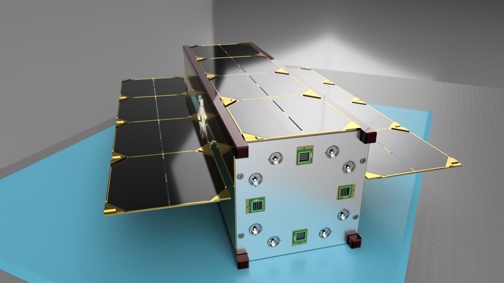
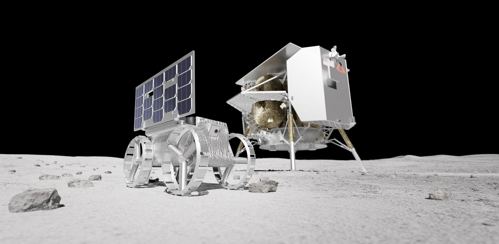

Main Approaches of the CubeSat Project
This proposal outlines the design and implementation of a 3U CubeSat aimed at remote sensing of Earth and the Moon. The CubeSat will carry advanced imaging and spectrometric instruments to gather data for scientific research and technology demonstration. The mission objectives include monitoring environmental changes on Earth and analyzing the lunar surface composition. The proposed mission will contribute to our understanding of these celestial bodies and advance CubeSat technology for future space missions. To ensure the successful completion of this mission, we require a comprehensive set of facilities and resources, including clean room facilities for the contamination-free assembly of sensitive components, a thermal vacuum chamber to simulate the harsh conditions of space, and a vibration testing lab to assess structural integrity under launch conditions. Global Monitoring: From lunar orbit, the CubeSat can capture high-resolution images of Earth, offering advantages for global monitoring: Climate Studies: Tracking changes in land cover and atmospheric phenomena to contribute to climate modeling and understand climate change impacts. Disaster Monitoring: Providing timely imagery during natural disasters to enhance situational awareness and improve recovery efforts. Urban Development Research: Analyzing urban areas to assess changes in land use and infrastructure development, aiding urban planning efforts.
The Moon serves as a valuable platform for scientific research. By deploying our CubeSat on a lunar lander, we can conduct various investigations that enhance our understanding of lunar geology and resources. The CubeSat's deployment in lunar orbit provides a unique vantage point for Earth observation, enabling a range of scientific and practical applications (Image credit: NASA). Investigate Lunar Regolith: One of the primary objectives of the CubeSat mission is to analyze the lunar regolith, which is the layer of loose, fragmented material covering solid bedrock. Key aspects of this investigation include: Composition Analysis: Utilizing spectrometric instruments to analyze the mineralogical composition of the regolith, identifying essential minerals like ilmenite and basalt. Resource Identification: Detecting valuable resources such as water ice and hydrogen, which inform future lunar exploration and in-situ resource utilization (ISRU) strategies. Sample Return Planning: Data on regolith composition will aid in planning future sample return missions, ensuring representative samples for geological studies. Study Surface Processes: Monitoring geological processes and surface changes over time provides insights into the Moon's history and evolution. This study includes: Impact Crater Analysis: Monitoring craters to study their formation and degradation, inferring the Moon's impact history. Regolith Mobility: Observing how lunar regolith is affected by factors like micrometeorite impacts to evaluate the stability of future lander sites. Volcanic Activity: Investigating signs of past volcanic eruptions to gain insights into the Moon's thermal history. Temporal Changes: Tracking changes on the lunar surface to understand dynamic processes affecting the Moon's environment.